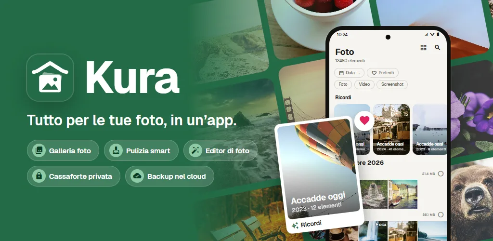
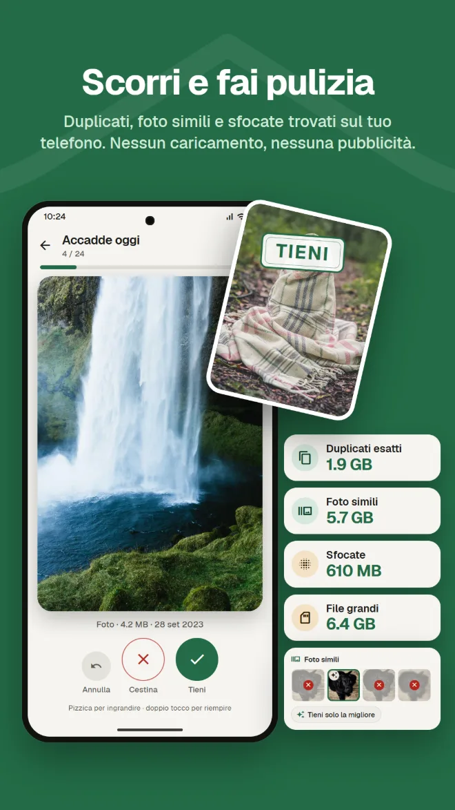
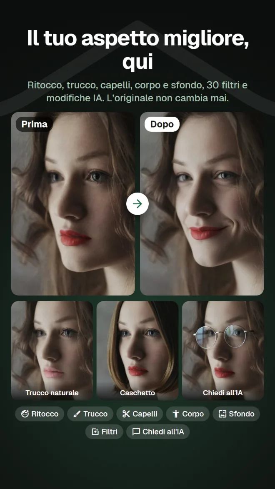
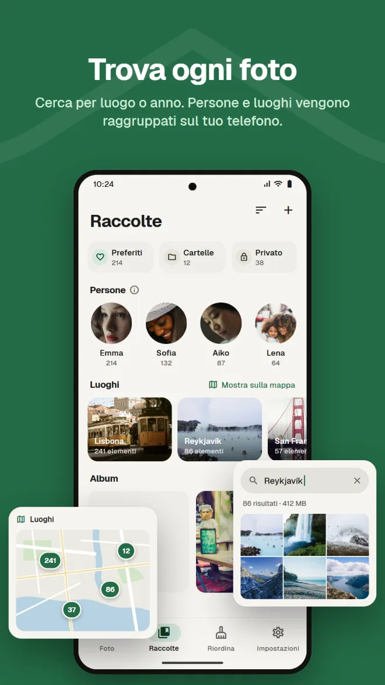
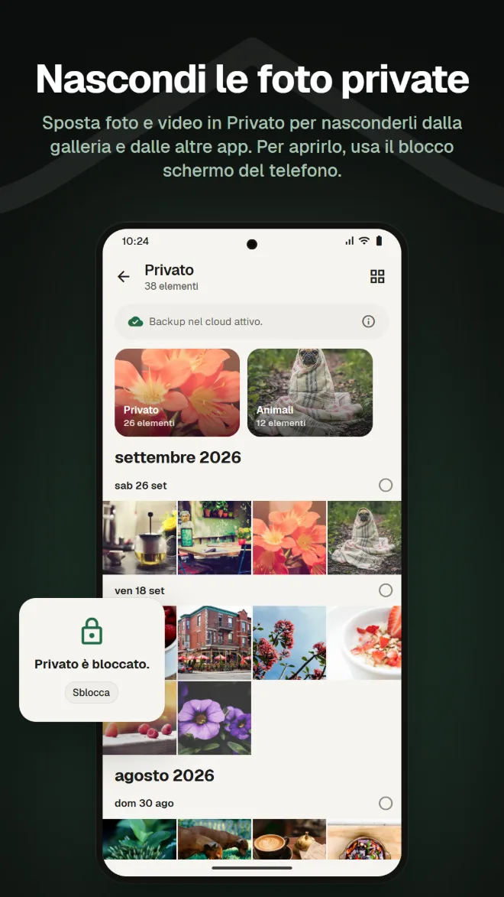
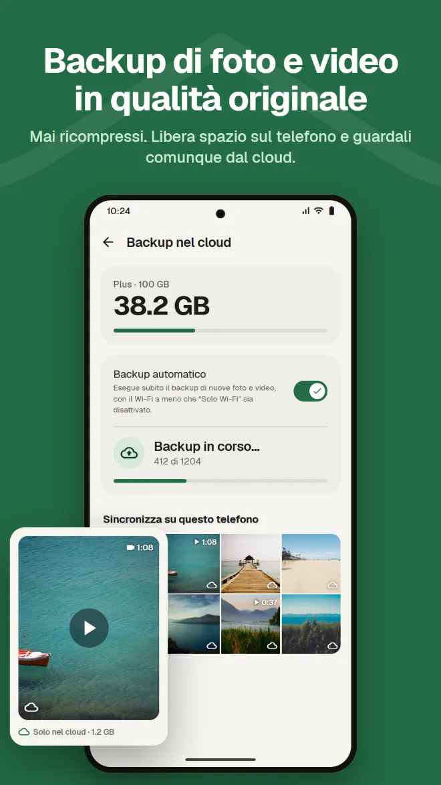
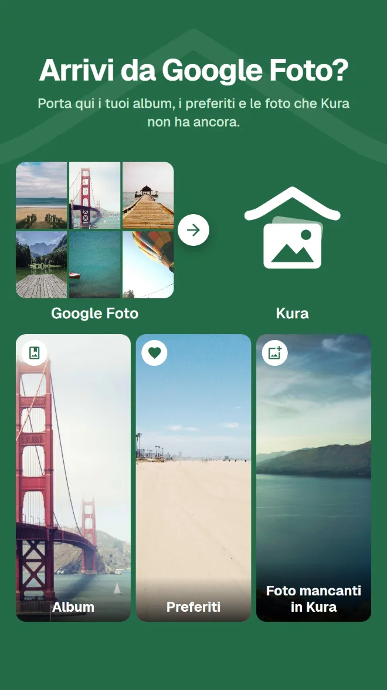

Cerca cosa c'è dentro
Trova le foto per luogo, per ciò che contengono o per il testo nell'immagine.
Galleria, pulizia, modifiche con l'IA, spazio privato, backup e passaggio da Google Foto. Con Kura non ti serve un'app diversa per ogni cosa.
Android 11 o successivo · Sfogliare, ordinare ed eliminare è gratis · Accedi con Google

Una galleria per guardarle, un'app di pulizia per liberare spazio, un'altra app per modificarle, un altro servizio per il backup. A ogni cambio devi ritrovare la stessa foto.
Kura fa tutto in un'unica libreria.
Guarda, riordina, modifica e fai il backup delle stesse foto, nello stesso posto.
Dalla libreria alla pulizia, alle modifiche, al passaggio da Google Foto e al backup.
Kura trova duplicati esatti, foto simili, foto sfocate e file grandi sul tuo telefono. Scorri a destra per tenere, a sinistra per cestinare, e vedi subito quanto spazio puoi liberare.

Ritocco, forma, trucco, capelli e sfondo, più 30 filtri, regolazioni e ritaglio. Ci sono filtri che rendono i piatti invitanti e strumenti corpo per tutta la figura. Salvi sempre una copia, così l'originale resta com'era.

Una griglia per data, con i ricordi dello stesso giorno negli anni passati. Cerca per luogo, per ciò che c'è nella foto o per il testo al suo interno, e i volti vengono raggruppati per persona sul tuo telefono.

Sposta foto e video in Privato per nasconderli dalla galleria e dalle altre app. Per aprirlo, usa il blocco schermo del telefono.

Backup di foto e video senza ricompressione. Rimuovi dal telefono le copie già salvate per liberare spazio; restano visibili dal cloud.

Basta inviare il file .zip di Google Takeout dall'app o dalla web app. Kura porta qui i tuoi album, i preferiti e le foto che non ha ancora. Il server di Kura lo estrae in background, così puoi chiudere l'app e il browser.

Le foto nel tuo cloud Kura si possono guardare, organizzare, riordinare, modificare, condividere e caricare nella web app, proprio come nell'app. I preferiti restano sincronizzati con l'app.
Apri la web appAccedi con Google · Solo in inglese e giapponese
Tutto quello che ti aspetti dalla galleria che usi ogni giorno.
Trova le foto per luogo, per ciò che contengono o per il testo nell'immagine.
Volti raggruppati per persona sul telefono e le tue foto su una mappa.
Le foto dello stesso giorno negli anni passati, in cima alla libreria.
Regolazioni di luminosità e colore, ritaglio e pennello, più filtri per il cibo.
Aggiungi scadenza e password e invia a chi non ha l'app.
Conferma con il blocco schermo ogni volta che la apri. Puoi anche nascondere Privato.
Installala e le tue foto compaiono, già in ordine.
Scaricala da Google Play (Android 11 o successivo)
Scegli «Consenti tutto» per caricare tutta la libreria
Accedi con il tuo account Google
Riordina subito; aggiungi il backup quando ti serve
Nessuna pubblicità. Paghi solo quando usi il cloud.
Tutto sul telefono
Addebito mensile tramite Google Play. Disdici quando vuoi
Google Play mostra i prezzi nella tua valuta locale.
Le foto lasciano il telefono solo quando fai qualcosa che le invia chiaramente da qualche parte.
Il riconoscimento di duplicati, sfocature, volti, oggetti e testo avviene sul telefono. Nessuna foto viene caricata per essere ordinata.
Android chiede conferma prima di eliminare qualsiasi file, e le foto cestinate restano nel cestino finché non lo svuoti.
Quando accedi, il nostro server conserva solo l'ID del tuo account Google. Nome e indirizzo email non vengono mai inviati.
Le modifiche IA inviano solo l'area intorno al volto, e né la foto né il risultato vengono conservati sul server.
Nessuna pubblicità · Sfogliare, ordinare ed eliminare è gratis